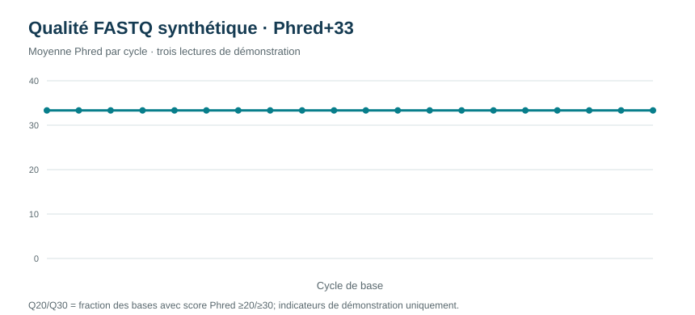

Contrôle qualité de séquences bactériennes
Transformer des séquences FASTA en indicateurs lisibles avant toute interprétation biologique.
Données synthétiques · contrôle exploratoirePython 3, sans dépendance externe. Depuis ce dossier : python scripts/reproduce.py. Le calcul d’ORF est exploratoire, sur le brin avant et le cadre simple indiqué par le script.

1. Problématique
Une séquence biologique ne peut pas être interprétée correctement si son format, sa longueur ou son contenu présentent des anomalies. Le contrôle qualité constitue donc une étape préalable à l’alignement, à l’annotation et à la comparaison de génomes. Il ne remplace pas une identification taxonomique : il vérifie que le matériau analysé est cohérent avec l’analyse envisagée.
2. Objectifs
- lire des séquences au format FASTA de manière reproductible ;
- calculer la longueur et la fraction GC de chaque séquence ;
- repérer les bases ambiguës ou les caractères inattendus ;
- fournir un indicateur d’ORF exploratoire sans le présenter comme une annotation ;
- documenter les limites de l’interprétation sur des séquences synthétiques.
3. Revue de lecture
Le format FASTA associe un identifiant précédé d’un signe « supérieur à » à une séquence composée de lettres nucléotidiques. Les contrôles de format sont essentiels car un espace, une lettre non autorisée ou une ligne mal concaténée peut modifier une longueur et fausser une composition. La fraction GC est un indicateur descriptif ; elle peut varier entre espèces et régions génomiques, mais elle ne suffit pas à identifier une bactérie.
La recherche de cadres ouverts de lecture (ORF) est également exploratoire. Un ORF candidat doit être confirmé par une annotation, un alignement, des bases de données et, lorsque cela est pertinent, des preuves expérimentales. La présence d’un ORF ne prouve ni l’expression d’un gène, ni la virulence, ni la résistance à un antibiotique.
4. De la saisie FASTA au contrôle qualité
FASTA est un format texte simple : une ligne d’identification commence par >, puis une ou plusieurs lignes contiennent la séquence. La première étape consiste à vérifier que chaque en-tête possède un identifiant unique et que les lignes de séquence sont correctement réunies. Les espaces, retours à la ligne et caractères invisibles sont retirés ; les lettres sont converties dans une casse homogène.
Le tri en amont sépare les entrées valides des entrées à revoir. Une séquence vide, un en-tête absent, un caractère hors alphabet ou une longueur inattendue est signalé plutôt que silencieusement corrigé. Cette décision conserve la traçabilité : le lecteur sait ce qui a été accepté, transformé ou exclu.
Pour chaque séquence retenue, on conserve l’identifiant original, la longueur avant et après normalisation, le nombre de bases ambiguës, la fraction GC et le statut du contrôle. Ces champs permettent de retrouver la séquence à l’origine d’un résultat et d’expliquer une anomalie.
5. Méthode
Lecture et normalisation
Les en-têtes et les séquences sont séparés, les retours à la ligne sont supprimés et les caractères sont uniformisés avant calcul.
Contrôles
La longueur, les bases ambiguës et les caractères hors alphabet attendu sont comptés pour chaque entrée.
Métriques
La composition GC est calculée sur les bases G et C rapportées à la longueur. L’indicateur ORF est présenté comme une exploration et non une annotation.
Traçabilité
Les métriques par séquence sont exportées dans un tableau CSV et un résumé JSON afin de faciliter la vérification.
Règles de contrôle et définition des métriques
- Format : chaque séquence doit suivre un en-tête FASTA non vide; les lignes sont concaténées et mises en majuscules. Les entrées mal formées sont rejetées plutôt que réparées silencieusement.
- Alphabet : A, C, G, T sont les bases non ambiguës; N est compté comme ambigu. Les autres symboles ne sont pas acceptés par l’analyse.
- Longueur : compte tous les caractères nucléotidiques retenus, y compris N. La fraction GC utilise uniquement A/C/G/T valides : (G+C)/(A+C+G+T) × 100.
- ORF : repérer ATG puis un codon stop en phase dans le cadre avant décrit par le script. La recherche n’évalue ni le brin inverse ni tous les cadres; ce n’est pas une annotation fonctionnelle.
- Interprétation : aucune qualité Phred, couverture, contamination, alignement ou référence génomique n’est fournie; aucune identification taxonomique ou conclusion clinique n’est permise.
6. Résultats
Le tableau public rassemble les métriques calculées pour chaque séquence. La lecture doit commencer par les contrôles de longueur et de caractères, puis se poursuivre par la composition GC. Une séquence contenant des ambiguïtés exige une interprétation plus prudente, car les métriques dépendant de l’alphabet peuvent être incomplètes.

Limite : ces indicateurs exploratoires ne permettent ni d’identifier une espèce ni d’annoter un génome.
Télécharger le tableau de contrôle qualité · Télécharger le résumé JSON
7. Qualité de lectures FASTQ : démonstration séparée
FASTA conserve les bases mais pas leurs scores de qualité. Pour illustrer la qualité de lecture, le dépôt fournit donc un second jeu entièrement synthétique au format FASTQ, avec trois reads courts et des scores Phred+33. Cette partie ne modifie pas les métriques calculées sur le FASTA.
Règle de lecture : score Phred Q = −10 log10(probabilité d’erreur). Q20 correspond à une probabilité théorique d’erreur de 1 %; Q30 à 0,1 %. Ces scores sont des encodages de qualité, pas des garanties de justesse biologique. Le script contrôle les quatre lignes par read, l’accord longueur/qualité, l’encodage imprimable Phred+33 puis calcule longueur, GC, N, moyenne Phred, Q20 et Q30. Les métriques par cycle utilisent uniquement les reads couvrant le cycle.

Tableau synthétique par lecture
| Read | Longueur | GC % | Bases N | Phred moyen | Q20 | Q30 |
|---|---|---|---|---|---|---|
| DEMO_READ_01 | 20 | 50,0 | 0 | 40,0 | 100 % | 100 % |
| DEMO_READ_02 | 20 | 50,0 | 0 | 20,0 | 100 % | 0 % |
| DEMO_READ_03 | 20 | 50,0 | 4 | 40,0 | 100 % | 100 % |
Télécharger les métriques par lecture · Télécharger les métriques par cycle · Provenance et limites
Limites FASTQ : n=3 reads artificiels, aucune calibration instrumentale, aucun adaptateur, contamination ou contrôle de couverture. Pour de vrais runs, employer un outil validé tel que FastQC/MultiQC, conserver les fichiers bruts et documenter le séquenceur et la librairie.
8. Interprétation et limites
Une variation de GC peut être utile pour comparer des séquences, mais elle ne constitue pas une preuve d’appartenance taxonomique. De même, un ORF détecté par une règle simple ne permet pas d’assigner une fonction. Les séquences étant synthétiques, aucun résultat ne doit être extrapolé à une souche clinique.
- absence de qualité de séquençage par position et de scores Phred ;
- pas d’alignement avec une base de référence ;
- pas d’annotation fonctionnelle ni de validation expérimentale ;
- petit nombre de séquences et absence de contexte d’échantillonnage.
8. Conclusion
Ce projet met en place une étape de contrôle simple mais indispensable. Avant d’interpréter une séquence bactérienne, il faut vérifier ce qui a réellement été lu, conserver les métriques et expliciter ce que chaque indicateur permet — ou ne permet pas — de conclure.
9. Références de lecture
- NCBI. FASTA format specification.
- Altschul SF et al. Basic local alignment search tool. J Mol Biol. 1990.
- Li H, Durbin R. Fast and accurate short read alignment with Burrows-Wheeler transform. Bioinformatics. 2009.
10. Références et ressources
- NCBI. FASTA format.
- NCBI. SRA submission formats and FASTQ.
- Babraham Bioinformatics. FastQC.
- Ewels P et al. MultiQC: summarize analysis results for multiple tools and samples. Bioinformatics. 2016.
- Phred quality scores. Cock et al. The Sanger FASTQ file format for sequences with quality scores. 2009.
- NCBI. BLAST documentation.
- Biopython. SeqIO sequence input/output.
- European Nucleotide Archive. ENA sequence archive.
- NCBI. GenBank.
- Galaxy Training Network. Training materials.
Données synthétiques publiées pour démontrer la méthode.